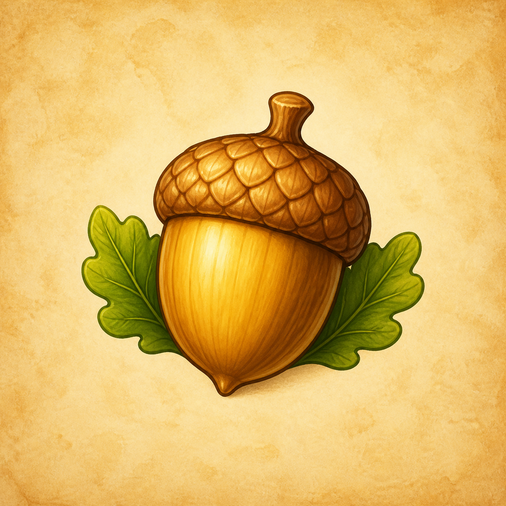
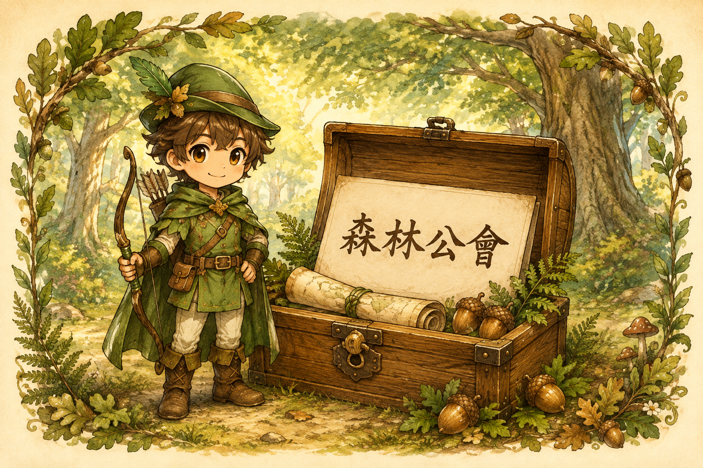
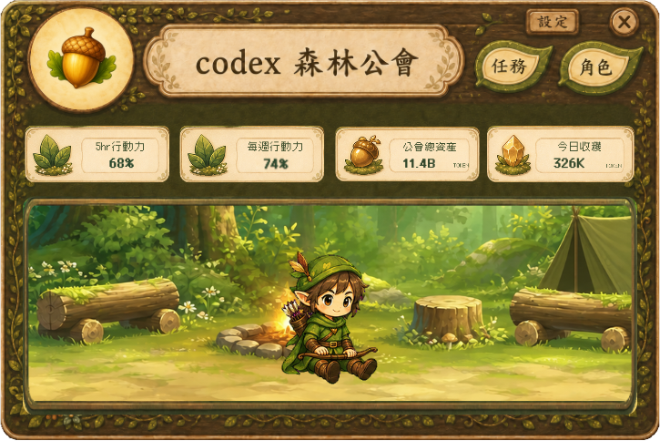

01
任務一起出發
顯示進行中的 Codex 任務，讓桌面多一點冒險的動靜。

一百分遊戲教育工作坊課後小禮包
注意｜目前僅支援 Windows 11 x64Windows 10、Mac、手機與 Windows ARM 目前無法使用。請先安裝並登入官方 Codex；森林公會不包含 Codex 帳號，也不是 OpenAI 官方產品。
支援範圍與注意事項FOREST GUILD
不是多一件要完成的事，而是替原本的練習多一點陪伴。
顯示進行中的 Codex 任務，讓桌面多一點冒險的動靜。
沒有任務時，夥伴會回到營地，走走、歇歇。
每累計 500 萬 TOKEN 隨機解鎖一位，每天最多一位，剩餘進度繼續保留。
YOUR FIRST VISIT
安裝只需做一次。之後從桌面的圖示開啟，就可以繼續使用。

確認已安裝並登入，而且可以正常開始一個任務。
下載上方的 Windows 安裝檔，依畫面完成安裝。若看到安全攔截，先停止並向老師回報。
程式會在本機讀取 Codex 任務、使用量與必要紀錄，保存你的頭像和收集進度。不需要把密碼或 API 金鑰貼到森林公會；這個領取頁也沒有登入或資料蒐集表單。
BEFORE THE ADVENTURE
開啟森林公會，點左上角的圓形頭像，選擇電腦裡的 PNG、JPG 或 BMP 圖片，再按「開啟」就會套用。建議使用正方形、人物置中的圖片，避免臉被圓框裁掉。想換回原本的圖案，對頭像按滑鼠右鍵，選「恢復預設頭像」。圖片只保存在這台電腦，更新程式時會保留。
不用另外安裝。這份 Windows 試用包已包含需要的 .NET 執行環境。你仍需要先安裝並登入官方 Codex。
這一版只提供 Windows 11 的 x64 電腦試用；目前不支援 Windows 10、Mac、手機或 Windows ARM。
森林公會是陪伴用的小工具，顯示 Codex 任務與用量，不會替你發起 AI 生成。Codex 本身的方案、額度與費用仍依你使用的官方服務計算。
從這台電腦第一次啟用森林公會後開始累計，每 500 萬 TOKEN 隨機解鎖一個新職業，每天最多一位（依電腦當地日期）。超出的 TOKEN 會保留，隔天達門檻可再解鎖；不是每天免費贈送。目前含初始弓箭手共 9 個職業。首頁的歷史使用量與角色解鎖進度分開計算。
老師提供新版下載包後，先關閉森林公會，再下載新版安裝包並安裝到原本位置。新版會保留這台電腦的頭像、已解鎖角色與累積進度；不要刪除存檔或先卸載。新角色會加入收藏，仍依 TOKEN 門檻與每日上限解鎖。目前採手動下載更新，不會在背景自動換版本。
試用版尚未完成程式簽章。如果系統攔截，請先停止安裝，將警告畫面回報給授課老師；不要關閉防毒，也不要調低電腦的安全設定。
右上角「－」可縮小到 Windows 下方工作列，點工作列圖示就能恢復；縮小期間仍會偵測任務、累計 TOKEN，「×」才是關閉。請確認官方 Codex 已開啟並登入，再從桌面或開始功能表開啟「Codex 森林公會」。沒有進行中的任務時會顯示休息營地。若仍不正常，請記下試用版號與錯誤畫面，回到課程向老師回報。
已開放學員下載試用。此版本未簽章，尚未完成不同學員電腦的相容性測試；遇到安全警告請停止並回報老師。若你已使用舊版森林公會，請先關閉舊視窗再試用；不要刪除原本的存檔。
森林公會 APP 的原始碼開源版本整理中，尚未提供原始碼下載。